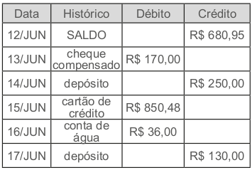
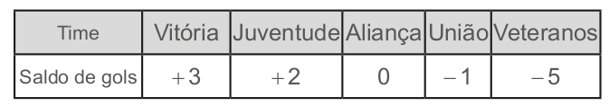
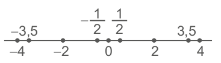
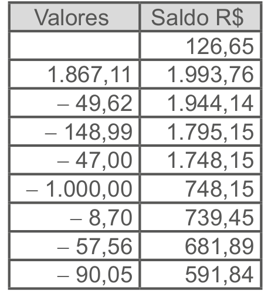
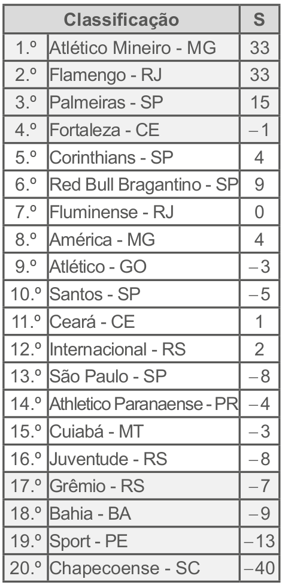
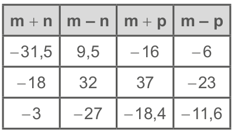
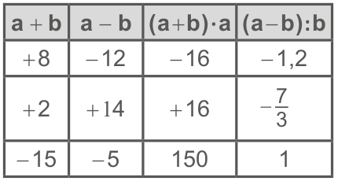

Respostas das atividades
Unidade 1
Capítulo 1
Encontre soluções
Página 16
1. a) Resposta pessoal.
b) Medidas de superfície: 125,12 km². Números naturais que indicam
quantidade: 1192, 344, 848, 12.
c) Um mil e cento e noventa e
dois, trezentos e trinta e quatro, oitocentos e quarenta e oito,
doze.
2. a) 57, 58 e 59.
b) 99 e 100
c) 997, 998, 999 e 1 000.
3. a) 40, 45
b) 78, 92
c) 88, 99
d) 512, 1 024
4. a) 2 014
b) 10 000
c) 102 001
d) 98 987
5. a) 0, 2, 4, 6, 8, 10, 12, 14, ...
b) 1, 3, 5, 7, 9, 11, 13,
15, ...
c) 0, 7, 14, 21, 28, 35, 42, 49, ...
d) 1, 2, 4,
5, 10, 20, 25, 50, 100, ...
e) 0, 11, 22, 33, 44, 55, 66, 77,
...
f) 1, 11, 121, ...
6. A: 2; B: 4; C: 8; D: 14
7. a) ∈
b) ∉
c) ∈
d) ∉
8. a) Falsa. O conjunto dos múltiplos de um número natural é
infinito. Todo número natural possui infinitos múltiplos.
b) Falsa. O número 1 é divisor de todos os números.
c) Verdadeira.
d) Falsa. O conjunto dos divisores de um número natural é finito.
9. a) D(32) = {1, 2, 4, 8, 16, 32}
b) D(64) = {1, 2, 4, 8, 16,
32, 64}
c) D(90) = {1, 2, 3, 5,6, 9, 10, 15, 18, 30, 45, 90}
d) D(121) = {1, 11, 121}
10. 40
11. Resposta pessoal.
12. a) M(11) = {0, 11, 22, 33, 44,55, ...}
b) M(15) = {0, 15, 30, 45, 60,75, ...}
c) M(20) = {0, 20, 40,
60, 80, 100, ...}
d) M(32) = {0, 32, 64, 96, 128, 160, ...}
13. Esta pessoa precisará comprar 5 pacotes de bombons e 4 pacotes de bala.
14. Resposta pessoal.
15. c)
16. d)
17. d)
Encontre soluções
Página 20
1. a) − 6ºC, − 5ºC e − 2ºC. Representam as temperaturas de um dia de
inverno nos estados do Rio Grande do Sul, Santa Catarina e Paraná.
b) − 2ºC
c) Abaixo de zero.
d) − 2ºC
e) Resposta pessoal.
2. a) − 250 m
b) + R$ 378,00
c) − 9ºC
d) + 850 m
e) + R$ 692,00
f) − R$ 1.200,00
g) − 130 m
h) − R$ 50,00
3. a) + 8 861 m; − 392 m.
Página 21
4. a) + 12
b) + 10
c) − 1
d) − 2
e) 0
f) − 3
5. − 6; + 14; + 2; + \(\dfrac{9}{9}\) ; −26; − \(\dfrac{8}{4}\)
6. a) − 14, − 13 e − 12
b) − 51 e − 50
c) + 216, + 217 e + 218
7. − 1, 0, 1, 6, 7
8. A: − 8; B: − 3; C: + 4; D: + 8.
9. d)
10. d)
Encontre soluções
Página 25
1. a) ∉
b) ∈
c) ∈
d) ∉
e) ∈
f) ∉
g) ∈
h) ∈
i) ∈
j) ∈
2.
3. A: \(- \dfrac{4}{3}\); B: \(- \dfrac{1}{2}\); C: \(\dfrac{2}{3}\); D: \(\dfrac{7}{4}\)
4. a) F
b) V
c) V
d) V
e) F
5. a) 0,25
b) − 0,4
c) − 0,75
d) 0,8
e) 7,5
f) − 3,4
g) 5,5
h) − 3,5
6. a) \(- \dfrac{5}{4}\)
b) \(\dfrac{37}{10}\)
c) \(\dfrac{9}{20}\)
d) \(- \dfrac{3}{100}\)
e) \(-
\dfrac{17}{14}\)
f) \(\dfrac{501}{500}\)
g)
\(\dfrac{23}{10}\)
h) \(- \dfrac{3}{2}\)
7. a) \( \dfrac{28}{42}\)
Página 26
8. \(\dfrac{26}{39}\)
9. a) \(-\dfrac{1}{4}\)
b) \(\dfrac{7}{5}\)
c) \(\dfrac{1}{4}\)
d) \(-\dfrac{9}{17}\)
e) \(-\dfrac{2}{11}\)
f) \(\dfrac{2}{5}\)
10. a) 0,3333... Decimal infinito e periódico.
286
b) 0,777... Decimal infinito e periódico.
c) 7,4 Decimal
finito.
d) 0,1666... Decimal infinito e periódico.
e)
2,8 Decimal finito.
f) 0,8333... Decimal infinito e periódico.
11. e)
12. d)
Capítulo 2
Encontre soluções
Página 29
1. a) Falsa. - 5 < - 3, pois -5 está à esquerda de - 3 na reta
numérica.
b) Verdadeira, pois \(-\dfrac{2}{3}\) está à direita de
\(-\dfrac{5}{3}\) na reta numérica.
c) Verdadeira, pois +10
está à direita de +7 na reta numérica.
d) Falsa. 9,04 > 8,5,
pois 9,04 está a direita de 8,5 na reta numérica.
e) Falsa. 0
> - 1, pois 0 está à direita de - 1 na reta numérica.
f)
Verdadeira, pois + 2 está à direita de - 2 na reta numérica.
2. a) Veteranos. b) Aliança. c) Veteranos. d) Vitória. e) Juventude. f)
4. - 3, - 2, - 1, 0, 1, 2, 3, 4.
5. A temperatura mais baixa foi registrada na cidade B.
6. O tubo que tem o maior diâmetro é o de \(\dfrac{3}{4}\)de polegada.
Página 30
7. a) André e Mateus.
b) Juliano, Lucas e Guilherme.
c)
André.
d) Guilherme.
e) -R$ 45,00, -R$ 36,78, -R$ 27,22,
R$ 17,08, R$ 85,00
8. Resposta pessoal.
Capítulo 3
Encontre soluções
Página 32
1. a) 13
b) \(\dfrac{8}{7}\)
c) 4
d) \(\dfrac{6}{11}\)
e) 8
f) 8
g) 145
h) 1
243
i) 24
j) \(\dfrac{3}{5}\)
k) 32
l) 9,75
2.
3. - 55
4. a) x = - 15 ou x = 15
b) x = - 8,7 ou x = 8,7
c) x =
- 27 ou x = 27
d) x = \(-\dfrac{1}{4}\) ou \(\dfrac{1}{4}\)
5. a) - 104, - 21, - 7, - 1, + 12, + 16, + 44, + 120
b) + 120,
+ 44, + 16, + 12, - 1, - 7, - 21,- 104
c) 1, 7, 12, 16, 21,
44, 104, 120
6. a) A = 2 e seu oposto é - 2.
b) B = - 7 e seu oposto é + 7.
c) C = - 0,5 e seu oposto é + 0,5.
d) D = 1,25 e seu
oposto é - 1,25.
e) E = 9 e seu oposto é - 9.
f) F = - 6
e seu oposto é 6.
7. a) F. Os números - 0,3 e 0,3 são números opostos.
b) V.
c) V.
d) F. O módulo de 1 é igual a 0,5. 2
e) V.
f) F. Os números 1,02 e - 1,02 são números simétricos.
g) V.
Relembre
Página 37
1. d)
2. c)
3. O salário de Rafael passou a ser de R$ 984,00.
4. b)
5. d)
Página 38
6. c)
7. c)
8. e)
9. c)
10. b)
Página 39
11. b)
Unidade 2
Capítulo 1
Encontre soluções
Página 46
1. (- 4,5) + (- 2) = - 4,5 - 2 = - 6,5. O mergulhador atingiu 6,5 me- tros de profundidade em relação ao nível do mar.
2. - 2
3. a) - 12
b) - 4
c) - 5
d) + 6
e) - 39
f) 0
g) - 18
h) - 2
i) - 62
j) + 54
k) + 168
l) + 121
4. a) A empresa teve maior lucro no 1.º semestre de 2013 e maior
prejuízo no 2.º semestre de 2013.
b) Teve um lucro de 2
milhões de reais.
c) O prejuízo foi menor no 1.º semestre de
2014.
d) Um saldo positivo de 3 milhões de reais.
Página 47
5.
6. a) - 2
b) - 31
c) - 9
d) -34
e) + 6
287
7. a) -11,81
b) \(\dfrac{11}{21}\)
c) 3,59
d) 0
e) \(\dfrac{19}{20}\)
f) \(- \dfrac{21}{2}\)
g) \(\dfrac{5}{7}\)
h) \(-\dfrac{5}{6}\)
i) \(\dfrac{11}{20}\)
8. a) \(\dfrac{3}{5}\)
b) -50,17
c)
\(\dfrac{5}{12}\)
d) -3
Encontre soluções
Página 50
1. a) + 2
b) - 3
c) 0
d) + 29
e) - 22
f) - 382
g) - 37
h) + 136
i) - 104
j)
+ 98
k) - 630
l) 0
2. a) 3
b) 149
c) - 60
d) 9
e) - 48
f)
95
g) 71
3. A variação de temperatura foi de 7°C.
Página 51
4.
Página 52
5. O valor disponível do cheque especial em sua conta bancária era de R$ 293,50.
6. a) - 4,83 b) \(-\dfrac{5}{8}\) c) -9,56 d) \(-\dfrac{11}{15}\) e) \(\dfrac{17}{21}\) f) \(\dfrac{9}{5}\)
7.
Página 53
8. Resposta pessoal.
9. 2,95
10. a) 10
b) - 23
c) 24
d) - 1
e) - 25,17
f)\(\dfrac{3}{2}\)
g) - 2,65
Página 54
11. Resposta pessoal.
12. Não. O máximo divisor comum entre 13 e 169 é 13 e a fração pode ser simplificada. Sua forma irredutível é \(\dfrac{1}{13}\)
13. Resposta pessoal.
Capítulo 2
Encontre soluções
Página 59
1. a) - 40
b) - 90
c) + 36
d) - 200
e) + 77
f) + 60
g) - 42
h) + 28
2. a) + 112
b) - 650
c) + 44
d) - 54
3. (- 1) ∙ (+ 18); (+ 1) ∙ (- 18);
(+ 2) ∙ (- 9); (- 2) ∙ (+
9);
(- 3) ∙ (+ 6) ∙ (+ 3) ∙ (- 6).
4. a) - 30
b) + 60
c) - 55
d) + 36
5. a) 30
b) - 22
c) 72
d) - 20
6. a) 27
b) - 45
c) - 208
d) - 3
7. a) \(\dfrac{6}{11}\)
b) - 28
c) - 0,125
d) -
0,36
e) 24,14
f) 0,96
g) \(-\dfrac{5}{9}\)
h) \(\dfrac{4}{3}\)
8. a) \(-\dfrac{13}{9}\) b) - 6,25 c) \(-\dfrac{106}{15}\) d) \(\dfrac{29}{42}\) e) \(\dfrac{7}{50}\)
9. Resposta pessoal.
Página 60
10. a)
Encontre soluções
Página 63
1. a) + 2
b) - 11
c) + 8
d) + 9
e) - 22
f) - 7
g) + 4
h) - 8
2. a) - 0,5
b) \(- \dfrac{1}{3}\)
c) -6
3. a) Positivo.
b) Positivo.
c) Negativo.
d)
Negativo.
4. a) 32
b) - 9
c) - 40
d) 12
e) - 0,5
f) 0,49
5. a) 2
b) 28
c) - 9
d) - 8,8
e) - 1,3
f) - 12,1
Página 64
6. a) \(-\dfrac{9}{4}\)
b) \(\dfrac{16}{15}\)
c) \(-\dfrac{2}{7}\)
d) -36
e) \(-\dfrac{8}{3}\)
f) - 0,5
g) -18,4
h) \(-\dfrac{3}{4}\)
i) \(\dfrac{14}{5}\)
j) \(\dfrac{55}{27}\)
288
7. a) \(-\dfrac{4}{5}\)
b) \(\dfrac{1}{24}\)
c) \(-\dfrac{1}{14}\)
d) -28,44
e) 12,5
f) - 31,6
8. a) - 5,7
b) 4,3
c) - 6
d)
\(-\dfrac{4}{3}\)
e) \(\dfrac{38}{7}\)
f)
\(\dfrac{1}{2}\)
g) 1,94
h) - 3,95
f)
\(\dfrac{83}{30}\)
9.
10. Resposta pessoal.
Capítulo 3
Encontre soluções
Página 70
1. a) 25
b) -27
c) 10 000
d) - 27
e) 64
f) 1
g) 1
h) - 1
i) - 100 000
j) 49
k) 1
l) -81
2. a) 3³ = 27
b) 6³ = 216
c) 5³ = 125
d) 2³ = 8
3. a) \((- 5)^{2}\) = 25
b) \((-4)^{3}\) = - 64
c) \((-
2)^{8}\) = 256
d) \(10^{5}\) = 10 000
4. a) \(-\dfrac{1}{128}\)
b) - 0,00001
c)
\(\dfrac{25}{49}\)
d) \(-\dfrac{9}{10}\)
e)
1
f) 1,44
g) \(\dfrac{27}{64}\)
h) -
0,125
5. a) \((- 2)^{8}\)
b) \(\left( -
\dfrac{2}{3}\right)^{3}\)
c) \((-0,5)^{12}\)
d) \(\dfrac{3}{5}\)
e) \(7^{4}\)
f) \(\left( - \dfrac{1}{7}\right)^{8}\)
Página 71
6. a) 3
b) 10
c) 8
d) 4
e) 2
f) 4
7. a) \(-\dfrac{3}{8}\)
b) -143
c) \(-\dfrac{88}{75}\)
d) \(\dfrac{61}{36}\)
8. a)
9. e)
Encontre soluções
Página 74
1. Medida do lado: 14 cm; Perímetro: 56 cm.
2. a) 9
b) 11
c) 7
d) 1
e) 20
f) 0
3. 640 m.
4. a) 0,2
b) 1,2
c) 0,4
d) 0,7
e) 0,8
f) 1,3
g) \(\dfrac{5}{10}\)
h)
\(\dfrac{2}{9}\)
i) \(\dfrac{1}{3}\)
j)
\(\dfrac{11}{4}\)
5. a) \(\dfrac{17}{30}\)
b) \(-\dfrac{5}{12}\)
c) 1,3
d) 1
e) \(\dfrac{51}{10}\)
f) \(-\dfrac{127}{15}\)
6. d)
Relembre
Página 78
1. a)
2. 20 horas.
3. c)
4. Avós: \(2^{2}\); bisavós: \(2^{3}\); trisavós: \(2^{4}\); tataravós: \(2^{5}\) = 32.
5. d)
6. \(2^{15}\)
Página 79
7. 6 m.
8. c)
9. b)
10. c)
11. a)
12. c)
13. a)
Unidade 3
Capítulo 1
Encontre soluções
Página 83
1. Resposta pessoal. Régua,trena, metro de carpinteiro, fita métrica, etc.
2. a) Régua.
b) Trena ou metro de carpinteiro.
c) Trena
ou metro de carpinteiro.
d) Régua.
3. Resposta pessoal.
4. Resposta pessoal.
Capítulo 2
Encontre soluções
Página 92
1. 10 250 m²
2. A área do retângulo é de 735 cm².
3. 2,16 m²
4. 27 m²
5. 4 m²
6. a) 25 cm²
b) 54 cm²
Página 93
c) 60 cm²
d) 14 cm²
e) 48 cm²
f) 150 cm²
7. 900 lajotas.
8. 9,6 m²
9. 30 cm²
10. 126 m
11. 1 220 cm²
Capítulo 3
Encontre soluções
Página 95
1. a) Área: 48 cm². Perímetro: 32 cm.
b) Área: 84 cm². Perímetro: 36 cm.
2. a) 36 cm²
b) 92 cm²
3. a) 1 200 cm²
b) 140 cm
c) 1 496 cm²
d) 156 cm
4. 144 cm²
5. Resposta pessoal.
Página 96
6. 80 m²
7. 1,44 m²
8. d)
9. d)
289